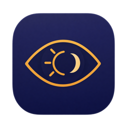
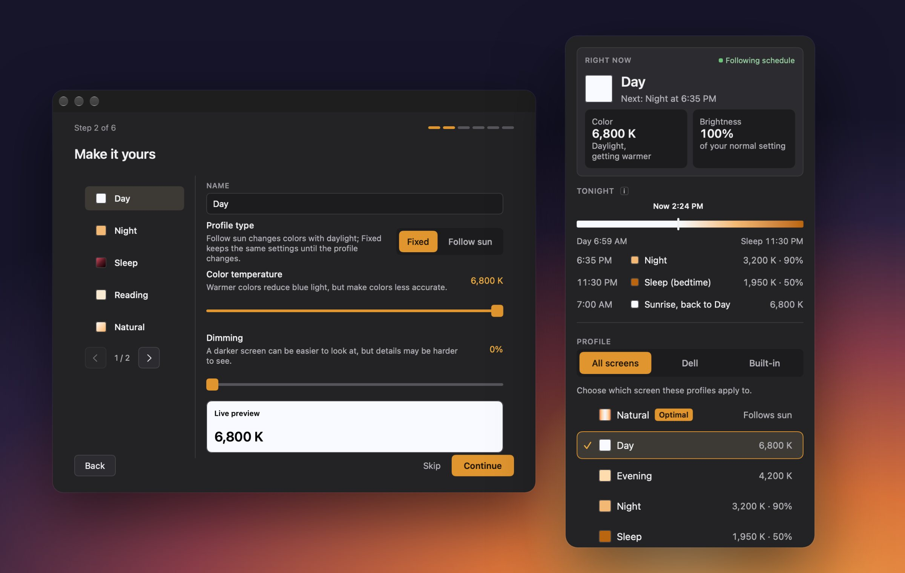
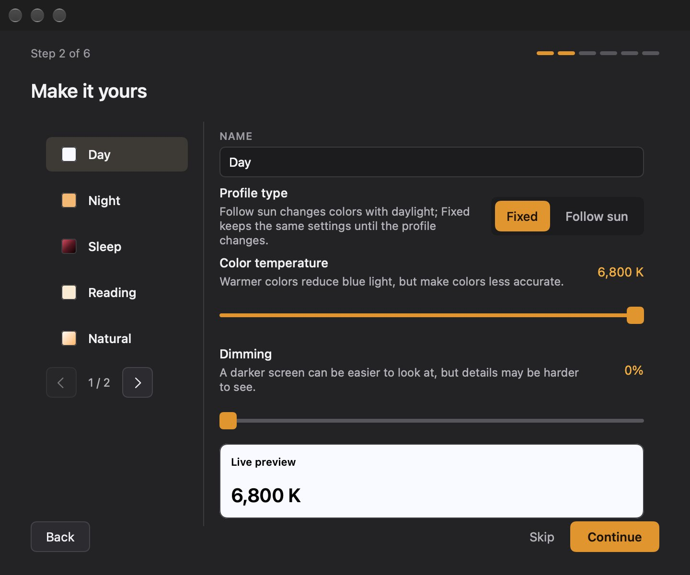
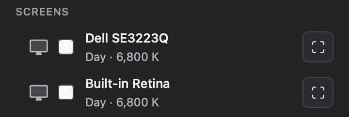

Afterglow
Afterglow warms your Mac's screens after sunset and cools them back at sunrise, on every display, on a schedule you set.
Download for MacNot for Intel Macs.

Why it matters
A Mac is built to look like noon all day. After dark it keeps pushing bright, blue-white light at you, flickers pixels you can't see, and holds your eyes a foot from the screen for hours.
Afterglow turns your Mac from something that wears on your eyes and sleep into something neutral. It warms and dims your screens as the evening goes on, takes out the flicker, reminds you to look away, and brings everything back to daylight in the morning, without you touching anything.
Who it's for
Anyone who works or reads on a Mac after dark, especially with an external monitor or two. macOS Night Shift uses one setting for every screen and can't dim. Afterglow goes down to a candle-warm 1200K, dims as well as warms, and gives each screen its own settings.
What it does
Three things run every evening on their own. The rest are there when you want them.

Follows the sun where you are
Afterglow knows when the sun sets in your city and fades gradually from Day to Evening, Night and Sleep. You always see what's coming tonight.

Profiles you can tune
Each profile has its own color temperature and brightness, from 6800K daylight down to 1200K, with a live preview as you adjust.

Every screen, its own way
Your laptop and your monitor rarely need the same setting. Give each screen its own profile, or apply one to all of them.
Built for your eyes and sleep
Turn on what you want in Settings. The automatic ones start off, and you can change any of them later.
No pixel flicker
To fake extra shades, your Mac flickers pixels between two nearby colors many times a second. It's called temporal dithering. Afterglow turns it off.
Lower backlight flicker
Many screens flicker more when the backlight is turned low. Afterglow keeps the built-in backlight out of that range and dims the image in software instead.
Eye breaks
Every 20 minutes, a soft glow at the edge of the screen asks you to look about 20 feet away for 20 seconds. Breaks wait during calls, screen sharing and full-screen video.
Reduce glare
Tones down blinding white pages, so a bright website at night doesn't undo the warm screen. Set how strong it is for each screen.
Wind down to Sleep
One click fades your screens to Sleep over 15 to 60 minutes. The Sleep profile goes to deep red, with optional grayscale.
Quiet the Mac while you sleep
Once you're asleep, your screens drop to minimum brightness and the sound mutes or turns down. Both come back before you wake, 15 minutes ahead by default.
Morning light
A gentle nudge after sunrise to go get some daylight. Tap Done or Not today, and that's all it records. It never asks twice in one morning.
Weekly summary
See which nights a screen stayed bright past bedtime, how many eye breaks you took and which mornings you got outside. It can suggest a Sleep time from how you actually use your Mac.
Dark mode that follows you
Each profile can switch macOS to Light or Dark, so your whole Mac changes with the evening, not just the color.
Works on
Privacy
Your location, schedules and settings stay on your Mac. Afterglow has no account, analytics or ads.
Optional crash reports are on by default. Turn them off in Settings > General > "Share crash reports".
Reports contain only technical details: your Mac model, macOS and Afterglow versions, number of displays, and an error code or crash trace. They never contain your location, app or window names, websites, settings, file paths or your name.
Afterglow sends a one-way scrambled ID for this Mac to Outliyr once, so existing users keep their features later. It contains no name, email or usage data.